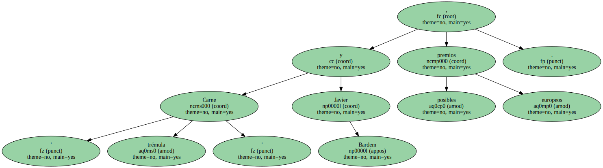
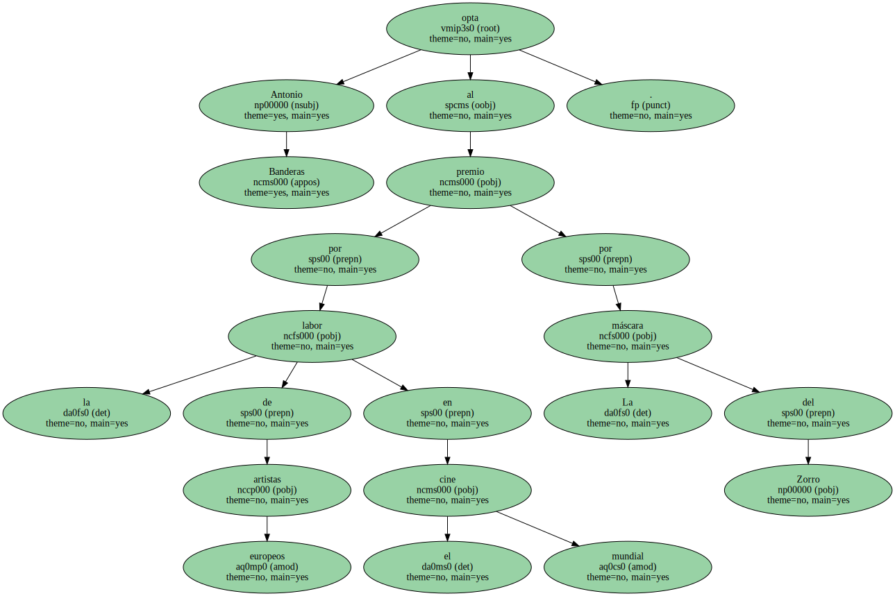
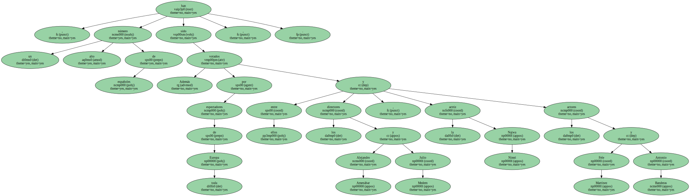
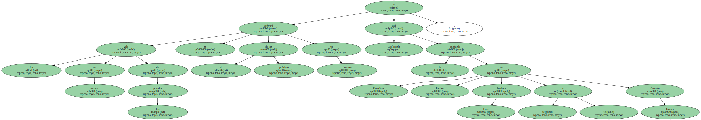

' Carne trémula ' y Javier Bardem , posibles premios europeos.
El filme de Pedro Almodóvar y el intérprete son candidatos a los premios a la mejor película y el mejor actor del año que entrega la Academia de Cine de Europa.

Antonio Banderas opta al premio por la labor de artistas europeos en el cine mundial por La máscara del Zorro.
Además , un alto número de españoles han sido votados por espectadores de toda Europa , entre ellos los directores Alejandro Amenábar y Julio Medem , la actriz Najwa Nimri y los actores Fele Martínez y Antonio Banderas.
La gala de entrega de los premios se celebrará el próximo viernes en Londres y está confirmada la asistencia de Almodóvar , Bardem , Penélope Cruz y Carmelo Gómez.
